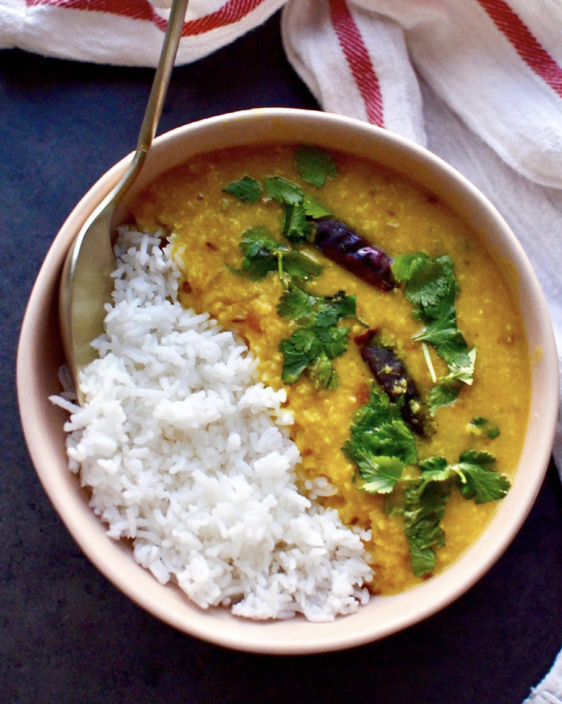

Dal Tadka

Dal Tadka
It's not lentil soup or lentil dal it's just dal - period. I was having a
hard time choosing which of my mom’s many dal recipes to share
(she legit made a different dal every night), and I landed with this
easy Dal Tadka (also known as chhonk or tempering spices) with a blend of
moong and masoor lentils, mainly because it cooks so quickly and it's super
adjustable.
Ingredients
- 1 cup yellow moong dal
- 1/2 cup red masoor dal
- 4 cups water
- 3 green chilies
- 2 tomatoes
- 1/2 tsp tumeric powder
- 1.5 tsp coriander powder
- salt
Instructions
- Add the first eight ingredients to your pressure cooker.
- Set pressure cook settings to sealing, High, Natural Release, 7 minutes
- Wait for pressure to release, after 10 min if the pressure valve hasn't
dropped, manually release the remaining pressure. Check to see if the consistency
is how you like it!
- Start on your tadka/chhonk (temper your spices) using a tiny tadka pan
or small frying pan. Add ghee or avacado oil and get it very hot.
- Add the rest of the ingredients gradually. Mixing or swirling when
when needed to combine.
- Top with lime or cilantro, and enjoy with basmati rice!